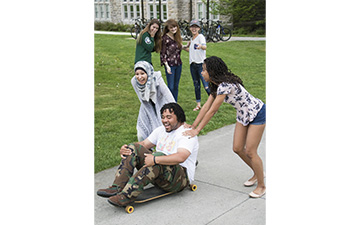
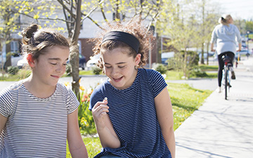

Alaina
He demolished everything I'd been building:
powders, brushes, aspirations coloring our floor.
Today, my daughter got into what remains
of my collection, and through her perception,
reminded me of freedom of expression,
and that it's still okay to cherish my dreams.
Eleea
When my grandma gave my dolphin to me, she said,
"It's fragile, but unbreakable, like you."
He threatened every day to shatter it,
and he managed to chip this fragile frame,
but I found the God that Grandma always talked about
and He's been putting me back together ever since.

Aimee
Skating was our favorite hobby when he taught me,
but when he changed and we split,
I bured my board in the back of my closet.
But sometimes now, I bring it to friends' hangouts,
and their delight and play with my skateboard
radiates joy that pushes me forward.

Ada
Coming to college I learned in Christian circles
that "father" doesn't actually mean
what I grew up thinking.
My Heavenly Father's loving embrace
is one I never before knew, and I praise Him because
he's been changing my dad, too.

Arin
There is a ring I lugged through every travel
a chain link to all that he'd unraveled.
One day, riding my bike downtown,
I heard the "clink" as it fell to the ground.
Whoever found it gained a new treasure,
and I flew on out of there, lighter than ever.
Franscesca
He wasn't physical until I came back for my belongings;
I lost a good amount of my kitchen supplies that day.
I remember I used to cook for us all the time,
but I haven't cooked much since.
It's freeing to think that now I could craft meals
for another, or for friends, or even just for me.
Like an aversion to a certain food after a
stomach virus, trauma can linger in our lives,
clinging to material objects in the form of
haunting memories. Survivors of domestic abuse
know this in that their abusers maintaining
power over them by having ruined everyday
objects for them. One example might be one
of my participants who still can't stomach a
cheeseburger because of the lingering
memories of her ex insulting her body
constantly.
I've never experienced domestic abuse, but
I have experienced trauma, in that I lost my
older brother when I was barely 12 years old.
People often expect others to move on so quickly
after a trauma, perhaps because it isn't literally
happening anymore. Daniel Coburn, in his latest work,
"The Hereditary Estate: Domestic Trauma and Vernacular
Photography",
touches on the notion that we have a prescriptive
photo-taking style in which we always document
families in a happy manner, even when we aren’t happy.
This translates to a greater need we foster:
we love to impose happiness on ourselves and others
when it couldn't be farther from the truth.
But trauma can live on, glued to
everyday items and experiences. This is certainly
true for survivors of domestic abuse and violence.
This year, I've begun to hear stories from people
who have lived through horrible domestic situations,
and I've found myself inspired by their stories.
They, too, are generally expected to be okay after
they've "gotten out" of the sphere of their abusers,
but the reality is that many times, the abusers still
linger in the damage they've caused.
The project was originally set to be titled
"Reclaimed Images." But according to dictionary.com,
" reclaim "
means "to bring back to a preferable manner,"
implying a backward movement, or a return to a previous
state. Any survivor of trauma could tell you that there
is no going back, only forward. " Frame ,"
however, can be defined:
"to conceive or imagine" and
"to fashion or shape." It's moving forward. Dreaming
of a new future. It's what this project showcases: the
empowerment of these courageous people as they take
back their lives and imagine and shape new tomorrows.
Each participant, as she thought about and engaged with
the project, had to face certain realities of her daily
life that remained unspoken, perhaps even to herself.
Each survivor had to confront the negativities that clung
to whatever object she chose, and by doing just that,
she took another step forward in deciding a new reality
for that object in her life. I only asked if I could
help turn an introspective lens toward her own heart,
and in attempting to take a beautiful photograph, I
simply imagined through the lens what each woman already
knew: that every little thing in her life will be seen
in a new light as she continues forward, forging new
memories each and every day.

{kind=link}
{kind=link}
{kind=link}
{kind=link}
{kind=link}